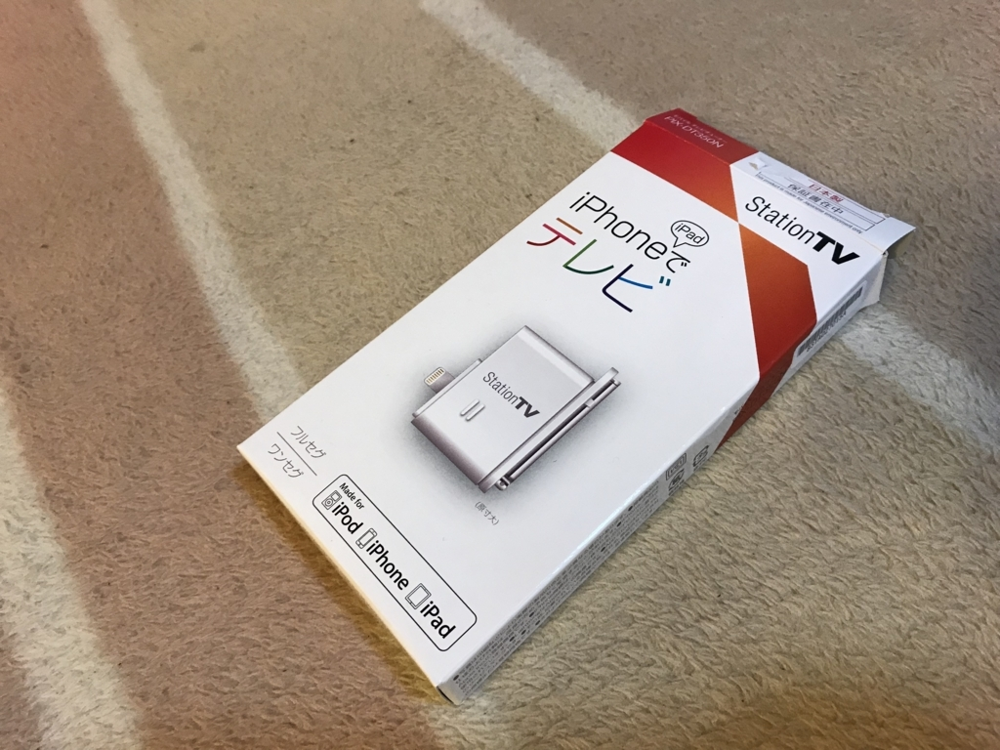

6月6日：ピクセラに少し怒ってる
公開日：
遡ること1カ月前のこと。僕は母の日に何をプレゼントしようか考えあぐねて、おかんの日常を観察していた。それでようやく気付いたんだが、うちのおかんはいまだにガラケーを使っていて、しかも昼寝のときなんかはそれでいつもワンセグをみているらしい。今どきワンセグ！

そこで、iPad 向けの TV チューナーを買ってみた。iPad は LINE をやるために買い与えてあるから、それに挿すだけで使えるようにセットアップしてあげたら、「画面が大きい！」と大喜びだった。買ってあげてよかった。

ピクセラ iOS対応モバイルテレビチューナー PIX-DT350N
- 出版社/メーカー: ピクセラ
- 発売日: 2017/03/24
- メディア: エレクトロニクス
- この商品を含むブログ (1件) を見る
その翌週あたりに後継版がでたのにはイラッとしたけど、まぁ、自分が使うわけじゃないから我慢できた。
で、それを見てたらちょっと自分のも欲しくなった。別に iPad で観たいとかじゃなく、PC で TV 観ながら画面をキャプってツイートできたらいいなーと思って。ピクセラは最近「Xit（サイト）」というブランドに移行してるみたいで、従来の「Station TV」ブランドの製品が機能の割に安い感じがあったのも背中を後押しした。

ピクセラ Windows/Android対応 テレビチューナー PIX-DT300N USB接続 フルセグ 録画機能搭載 【正規代理店品】
- 出版社/メーカー: ピクセラ
- 発売日: 2017/09/01
- メディア: Personal Computers
- この商品を含むブログを見る
でもな、こいつ、Windows 10 April 2018 Update で動かないんだよ！！ ソフトが起動しねぇ……エラー画面すら出ねぇ……それなりにリサーチしてから買ったつもりだったが、告知が出たのが買った後で思いっきり地雷を踏んでしまった。マジ返品したい。
そんなこんなで今回ちょっと思ったんだが、この人ら、Windows 10 対応を謳った製品を売ってるのに最新版でテストしないんだろうか。Fast リングでテストしろなんていわない、せめて Release Preview になったらテストすべきなんじゃないだろうか。一般リリースから1カ月もたって「動きません＞＜」ってリリース出して恥ずかしくないんだろうか。
なんか製品サポートにスピード感が全然なくて、がっかりした。中国製品とかそのあたりすごいのに……おいて行かれるのも宜なるかなって感じだ。ただでさえこの手の製品ってソフトがダメダメなイメージあるけど、あんまりだと思った。
追記
【2018年6月6日追記】
本日、この問題に対応したWindows向け「Xit」のアップデータを公開いたしました。アップデータを適用いただくことで、「Xit」をご利用いただけるようになります。
このブログ書いた直後のチェックでページが更新されてた。おつかれさま